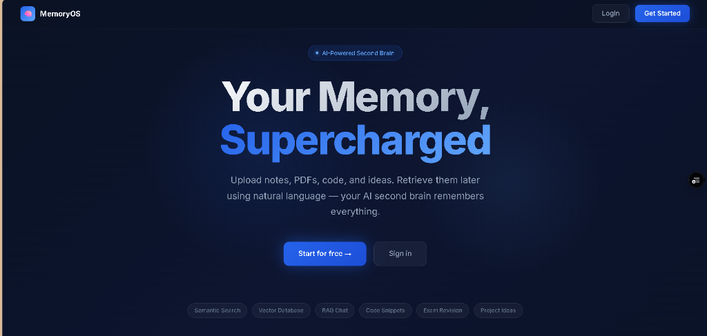
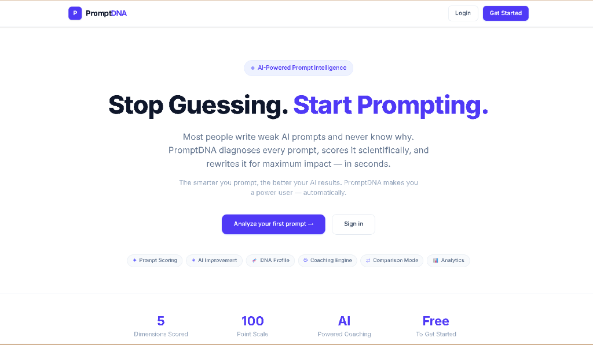

I am a 3rd-year Artificial Intelligence & Machine Learning student based in Bangalore, passionate about exploring neural network architectures and statistical modeling.
Bridging theoretical neural concepts with production-grade engineering.
A dedicated 3rd-year AI/ML student who transitioned from a fascination with core software engineering to specialized machine learning systems and algorithmic design. Active in building research-backed projects and mastering complex data structures.
My career objective is to secure an AI/ML internship or research fellowship where I can apply deep learning concepts, build experimental pipelines, and collaborate on cutting-edge solutions.
Graduated with high academic performance in Science stream (PCMB) at Surana Independent P.U College.
End-to-end built systems leveraging Vector Databases, RAG, and multi-dimensional LLM analytics.
Certified across Oracle Cloud AI Foundations, Deloitte Data Analytics, TCS, and NPTEL DSA/DBMS.
Categorized competencies in software engineering and machine learning.
Real-world AI systems built, optimized, and deployed.

An AI-powered contextual semantic memory retrieval system that processes and indexes notes, PDFs, code snippets, and web articles. Functions as an intelligent second brain retrieving by semantic meaning rather than simple keywords.

An AI-powered prompt intelligence system and fitness tracker for LLM communication. Analyzes, scores, and refines prompts across key dimensions to turn loose natural language into high-precision prompt templates.
A chronological record of education, projects, and growth.
Studied Science Stream (PCMB) at Surana Independent P.U College, graduating with an exceptional distinction of 94.5%.
Commenced engineering degree at Alliance University, Bangalore, focusing on algorithms, deep learning, and software architecture.
Designed and published an AI prompt intelligence coach featuring 0-100 hybrid scoring and user behavioral archetype classification.
Constructed a second-brain semantic retrieval platform integrating Sentence-Transformers embeddings, ChromaDB vector indexing, and Groq LLaMA 3.3.
Academic foundations, verified industry credentials, and milestones.
I am actively open to AI/ML research fellowships, engineering internships, and collaborative software projects. Feel free to connect directly.